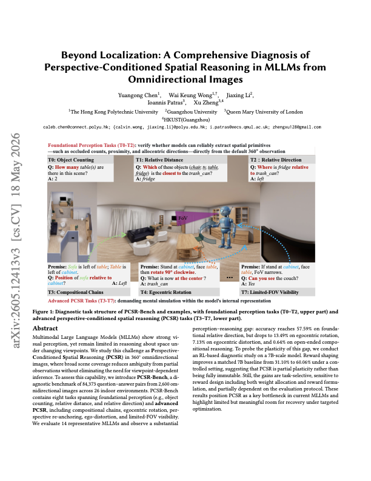
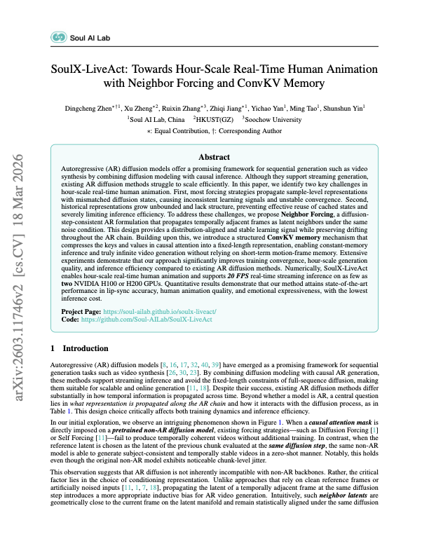
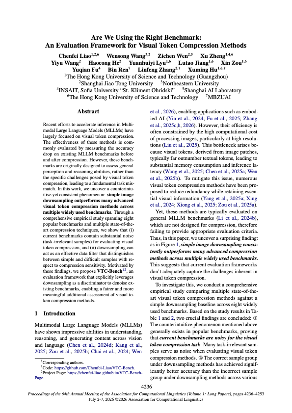

Publication
EvHuman accepted to IEEE TIP
EvHuman: Learning Continuous Space-Pose Neural Field of Human in Motion from a Static Event Camera
Regular paper · 6 Nov 202601 / News
Publication
EvHuman: Learning Continuous Space-Pose Neural Field of Human in Motion from a Static Event Camera
Regular paper · 6 Nov 202602 / Selected publications



Selected research · 2026
03 / Connect
Discuss research interests and fit with X Lab.
Explore a research question or collaboration.
Meeting request
Choose a preferred date and time. This is a request, not a confirmed appointment.
Busy periods on this date
Nov 9, 2026 – Jan 1, 2027
Published busy times are blocked. Other times are subject to confirmation; this calendar is maintained manually.
Private calendar details stay private. Prefer email? zhengx@gbu.edu.cn ↗